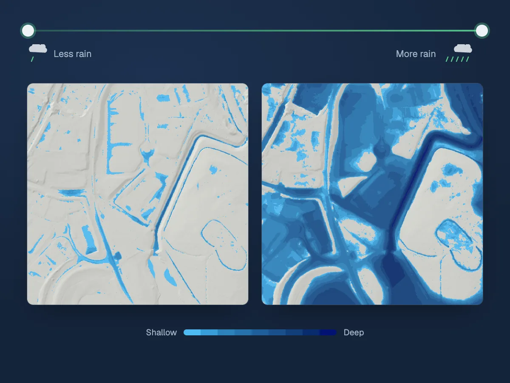

Status
Private previewIn private preview. Book a demo to see it for your sites.
Product
Private previewMove the rainfall from 0.2 to 6 times a storm that happened and watch the flood depth respond, street by street. Every tile on the map says whether it is a solver run or a blend between runs.

Chesterfield, two of the area's solver runs. Peak depth over the same square of ground from a run near the bottom of the rainfall range (left) and one near the top (right), drawn in the platform's depth colours. The runs also differ a little in the storm's length and timing.
Contains Environment Agency information © Environment Agency and/or database right 2026.
In private preview. Book a demo to see it for your sites.
Specification
How it works
Step 1
Physics solver runs for the area across many rainfall totals and storm lengths.
Step 2
You set the rainfall, as a multiple of the storm, and the storm's length.
Step 3
Each tile shows the solver run at that setting, or a blend between the nearest runs, and says which.
Data inputs
Ground
Environment Agency LiDAR on a 1 m grid: the bare-earth ground the water runs over.
The storm
A multiple of a storm that happened, with its length and where its peak falls.
Training data
Physics solver runs over many storms on real terrain: the physics-based training data the model learns from.
Giving confidence to act before flood becomes disaster.
Book a 20-minute demo to see flood depth maps for areas we serve, and to ask about yours.